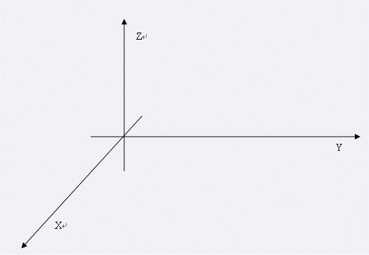

Notice:注册本OJ方式请见https://www.lydsy.com/JudgeOnline/wttl/thread.php?tid=5671
Problem 1466. -- Robots1466: Robots
Time Limit: 10 Sec Memory Limit: 64 MB
Submit: 6 Solved: 1
[Submit][Status][Discuss]Description
小Y最近喜欢上了机器人比赛。操纵一个机器人是复杂的，所以我们从一个简单的操作说起。
如何控制机器人的操作臂是一个最基本的问题。简单起见，我们可以把操作臂描述成为一些xyz三维中的一些点和线段。操作臂有N + 1个连接点，我们可以认为是三维中的一些点（大小忽略）并且把它们按照顺序从0至N编号。在相邻的两个连接点之间有一根硬杆相连（粗细忽略），这根硬杆的长度不变也不会发生扭曲。特别的，0号连接点总是固定于(0, 0, 0)这个位置。
作为问题的第一步，我们给出一些操作臂的旋转操作，而小Y需要模拟这些操作并且随时回答某些联结点的位置。
以下我们给出操作臂旋转操作的详细定义，每次旋转操作包含3个参数：[0,N-1]中的整数idx、一个[0, 2 * pi]中的实数alpha和一个模大于0的三维向量P。这个操作的意义是，以第idx为参考点，将操作臂编号不小于idx所有部分，以P为对称轴，逆时针旋转alpha。简单起见，在此过程中，你可以假定操作臂的活动是不受阻碍的。

我们来解释一下旋转操作的方向。你很容易分清你的前后上下左右，那么，x轴的正方向是从前到后；y轴的正方向是从左到右；z轴的正方向是从下到上。那么，举例说明：
若以P = (0, 0, 1)为对称轴，将点(1, 0, 0)逆时针旋转pi / 2，将得到点(0, 1, 0)；
若以P = (0, 1, 0)为对称轴，将点(0, 0, 1)逆时针旋转pi / 2，将得到点(1, 0, 0)；
若以P = (1, 0, 0)为对称轴，将点(0, 1, 0)逆时针旋转pi / 2，将得到点(0, 0, 1)；
若以(1, 1, 1)为参考点，(0, 0, 1)为对称轴，将点(2, 1, 1)逆时针旋转pi / 2，将得到点(1, 2, 1)。
小Y发现操作臂的连接点数和操作数实在太多了，他根本无法模拟这个过程。于是他找到了你，希望你能帮他完成这个任务。
Input
本题由多组数据，对于每组测试数据：
第一行两个正整数N(< 20000)、M(< 20000)，表示共有N + 1个连接点和M次旋转操作或者询问。接下来N + 1行，每行三个绝对值不大于10000的实数(Xi, Yi, Zi)按顺序描述第i个连接点的初始位置。接下来M行，每行开始包含第一个数k为0或者1：
若k = 2，那么接下来一个整数t，表示询问当前编号为t的连接点的位置
若k = 1，那么接下来5个数描述idx, alpha, (Xp, Yp, Zp)，意义如上文所述，表示执行一次的旋转操作。
输入文件一行由两个空格隔开的0结尾。
Output
对于每组数据：
对于每个k = 2的询问，输出一行三个实数(Xt, Yt, Zt)，描述被询问点的位置。每个实数保留4位小数。
每组输出之间用一个空行隔开。
Sample Input
1 2
0 0 0
1 0 0
1 0 1.5707963267948966192313216916398 0 0 1
2 1
2 3
0 0 0
1 0 0
2 0 0
1 0 1.5707963267948966192313216916398 0 0 1
1 1 1.5707963267948966192313216916398 1 0 0
2 2
0 0
Sample Output
0.0000 1.0000 0.0000
0.0000 1.0000 1.0000
HINT
Source
[Submit][Status][Discuss]
HOME
Back